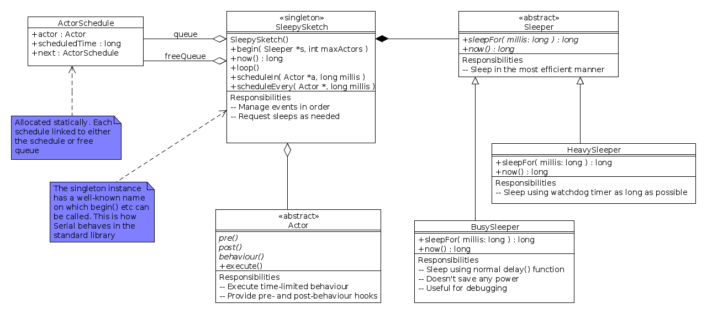

Sleepy sketches
Keeping the microcontroller asleep as much as possible is a key goal for a sensor system, so it makes sense to organise the entire software process around that.
The standard Arduino software model is, well, standard: programs ("sketches") are structured in terms of a setup() function that runs once when the system restarts and a loop() function that is run repeatedly. This suggests that the system spends its time running, which possibly isn't all that desirable: a sensor system typically tries to stay in a low-power mode as much as possible. The easiest way to do this is to provide a programming framework that handles the sleeping, and where the active bits of the program are scheduled automatically.
There are at least two ways to do this. The simplest is a library that lets loop() sleep, either directly or indirectly. This is good for simple programs and not so good for more complicated ones, as it means that loop() encapsulates all the program's logic in a single block. A more modern and compositional approach is to let program fragments request when they want to run somehow, and have a scheduler handle the sleeping, waking up, and execution of those fragments. That lets (for example) one fragment decide at run-time to schedule another
If we adopt this approach,we have to worry about the fact that one fragment might lock-out another. A desktop system might use threads; this is more problematic for a microcontroller, but an alternative is to force all fragments to only execute for a finite amount of time, so that the scheduler always gets control back. This might lead to a fragment not running when it asked (if other fragments were still running), but if we assume that the system spends most of its time asleep anyway, there will be plenty of catch-up time. Doing this results in an actor system where the fragments are actors that are scheduled from an actor queue.
Turning this into code, we get the SleepySketch library: a library for building Arduino sketches that spend most of their time sleeping.

There are a few wrinkles that need to be taken care of for running on a resource-constrained system. Firstly, the number of actors available is fixed at start-up (defaulting to 10), so that we can balance RAM usage.(With only 2k to play with, we need to be careful). Secondly, we use a class to manage the sleeping functionality in different ways: a BusySleeper that uses the normal delay() function (a busy loop) with no power-saving functions, a HeavySleeper that uses the watchdog timer to shut the system down as far as possible, and possibly some other intermediate strategies. Actors are provided by sub-classing the Actor class and providing a behaviour. We also allow pre- and post-behaviour actions to define families of actors, for example sensor observers. We separate the code for an actor from its scheduling.
The standard library uses singleton classes quite a lot, so for example the Serial object represents the USB connection from an Arduino to its host computer and is the target for all methods. We use the same approach and define a singleton, Sleepy
The program structure then loops something like this. If we assume
that we've defined an actor class PingActor, then we can
do the following:
void setup() { Serial.begin(9600); Sleepy.begin(new HeavySleeper()); Sleepy.scheduleIn(new PingActor("Ping!"), 10000); } void loop() { Sleepy.loop(); }
The setup() code initialises the serial port and the sleepy sketch using a HeavySleeper, and then schedules an actor to run in 10000ms. The loop() code runs the actors while there are actors remaining to schedule. If the PingActor instance just prints its message, then there will be no further actors to execute and the program will end; alternatively the actor could schedule further actors to be run later, and the sketch will pick them up. The sketch will remain asleep for as long as possible (probably for over 9s between start-up and the first ping), allowing for some fairly significant power saving.
This is a first design, now just about working. It's still not as easy as it could be, however, and needs some testing to make sure that the power savings do actually materialise.
Comments
Comments powered by Disqus